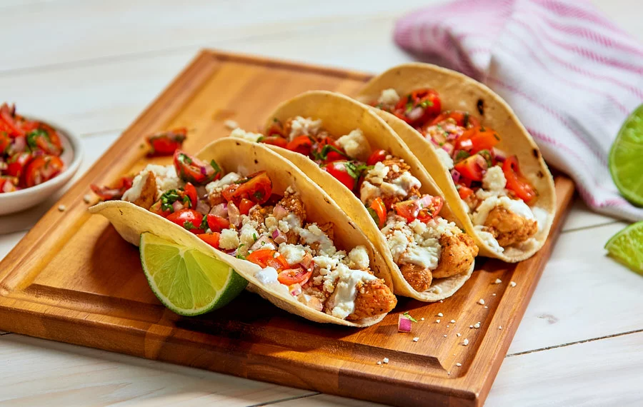
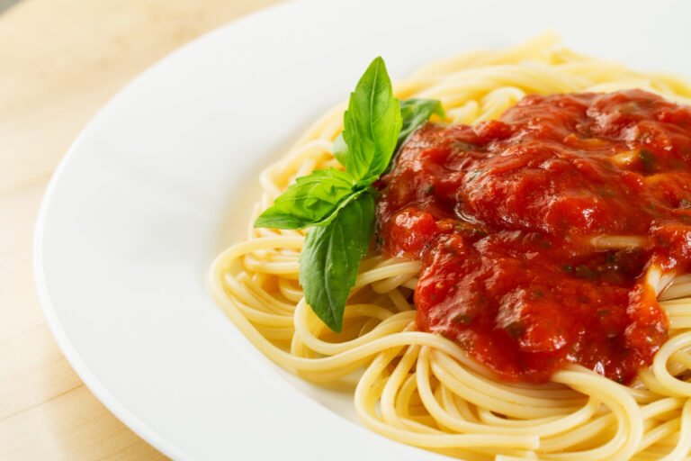
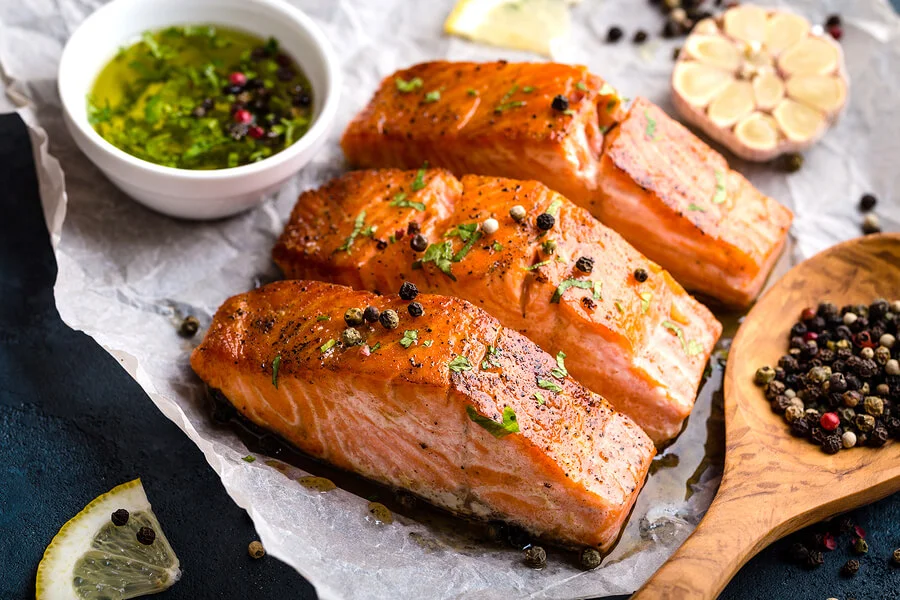
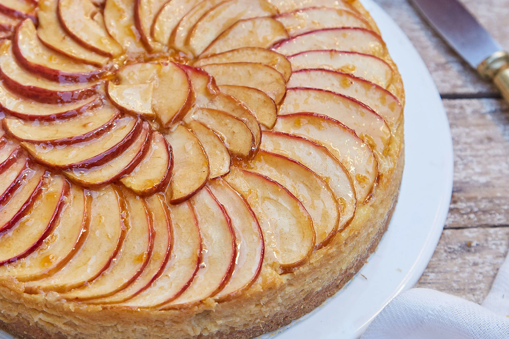

Tacos De pollo
Total: Aproximadamente 30 minutos
Preparacion: 5 - 10 minutos
Tiempo de coccion: 20 - 25 minutos

Pasta Con Salsa DE Tomate
Total: Aproximadamente 25 - 30 minutos
Preparacion: 8 - 12 minutos
Tiempo de coccion: 10 - 15 minutos

Salmon Al Horno
Total: Aproximadamente 20 - 25 minutos
Preparacion: 10 - 15 minutos
Tiempo de coccion: 12 - 15 minutos
Pollo Al Curry
Total: Aproximadamente 30 - 35 minutos
Preparacion: 5 - 10 minutos
Tiempo de coccion: 20 - 25 minutos

Torta De Manzana
Total: Aproximadamente 30 - 35 minutos
Preparacion: 15 minutos
Tiempo de coccion: 20 - 25 minutos

Camarones Al Ajillo
Total: Aproximadamente 25 minutos
Preparacion: 10 minutos
Tiempo de coccion: 15 minutos